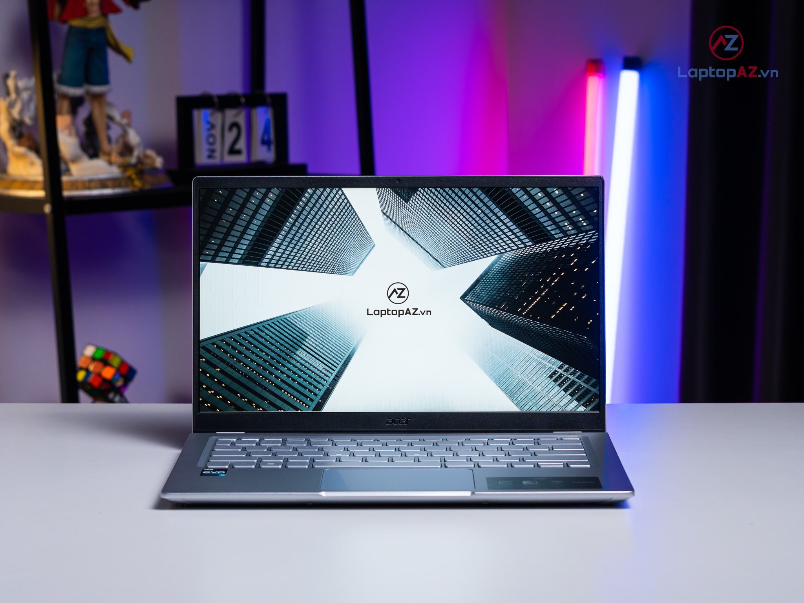
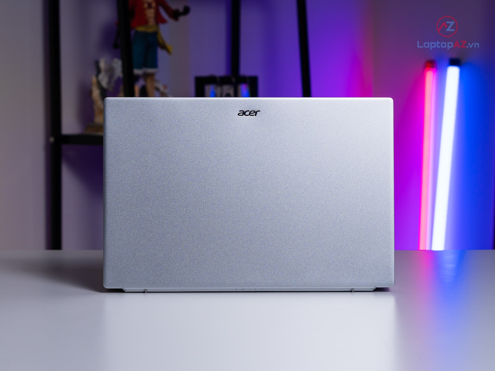
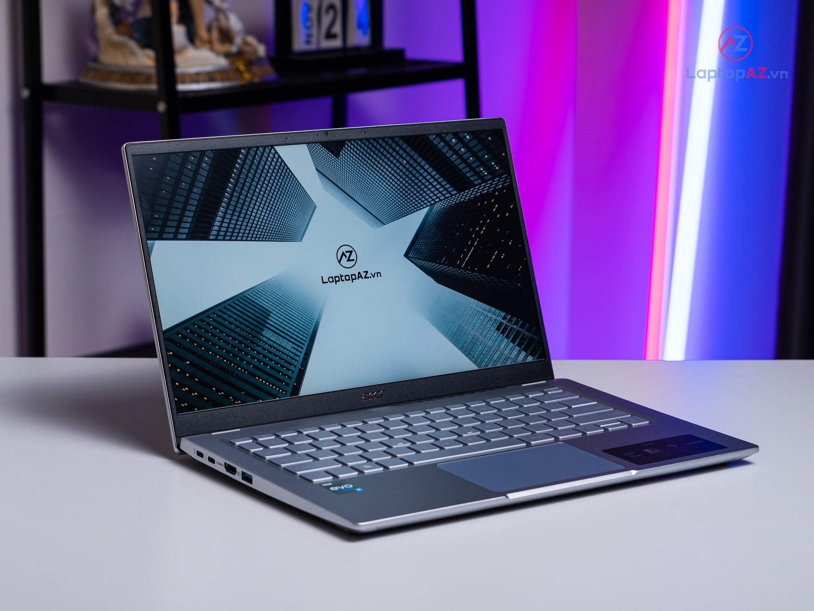
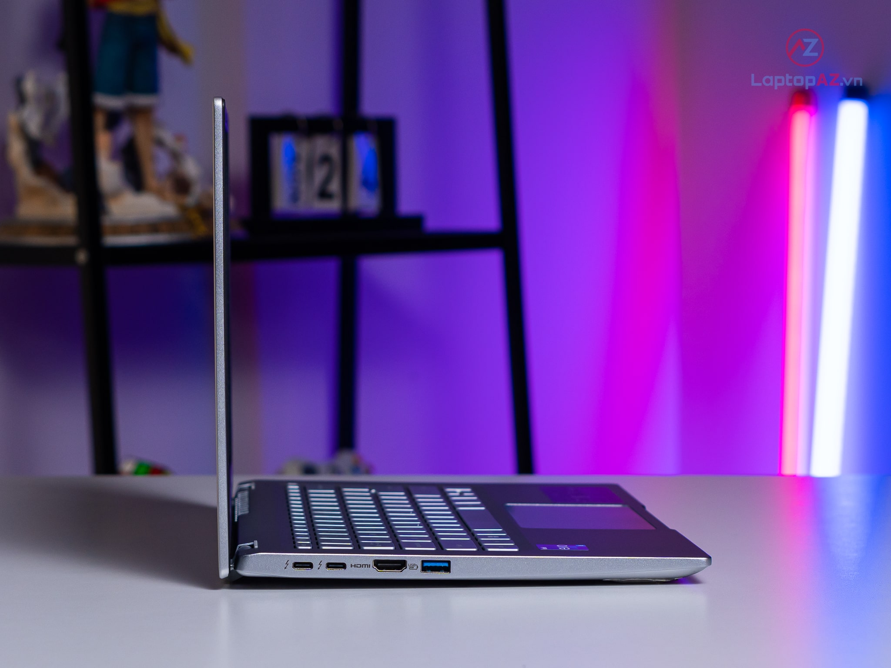
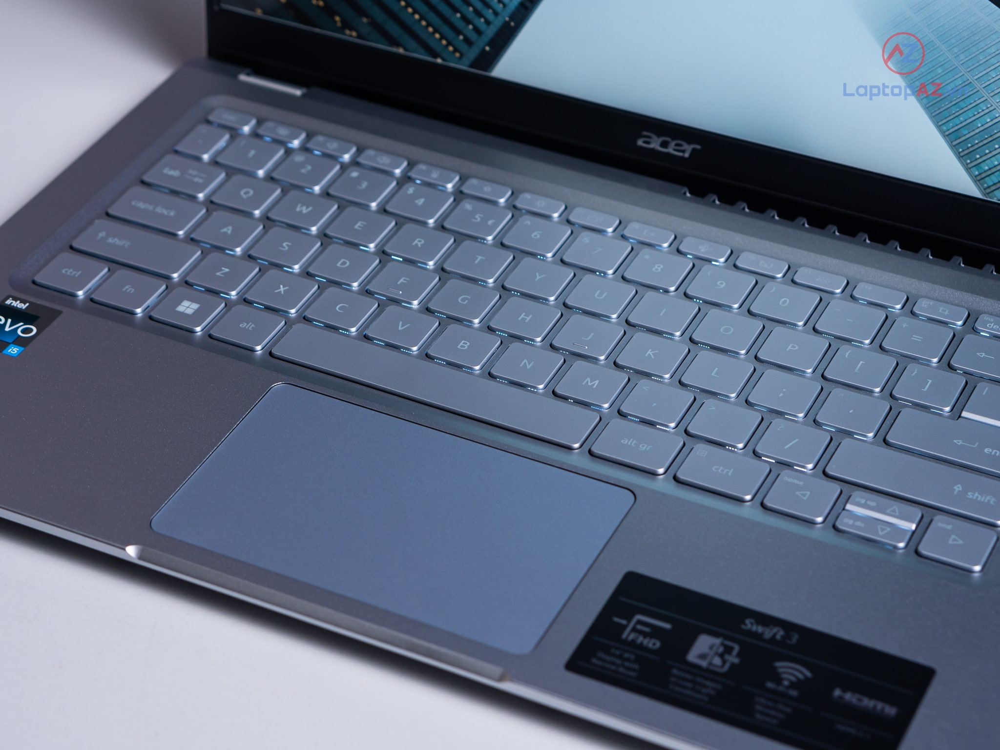
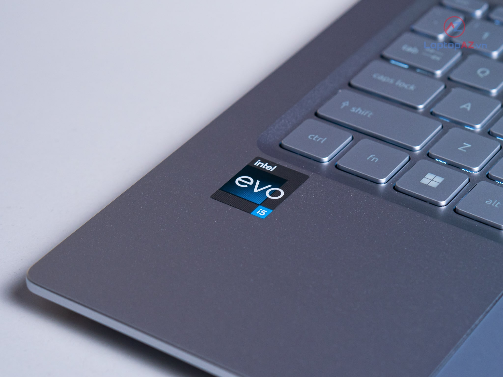

[New Outlet] Acer Swift 3 SF314-512-52MZ (Core i5-1240P, 16GB, 512GB, 14' FHD IPS)

Giá: 19.990.990
Bảo hành: 12 tháng
Tình trạng: Liên hệ
CẤU HÌNH:
Core i5-1240P, Ram 16GB, SSD 512GB, 14 FHD IPS
YÊN TÂM MUA SẮM TẠI TUNG PC
Chất lượng sản phẩm là hàng đầu
Dùng test máy 15 ngày đầu lỗi 1 đổi 1
Hỗ trợ và hậu mãi sau bán hàng tốt nhất
Trả góp lãi suất 0% qua thẻ visa
Giao hàng miễn phí toàn quốc nhanh nhất
Số 1 Phố Xốm, Phú Lãm, Hà Đông, Hà Nội
So 1 Pho Xom, Phu Lam, Ha Dong, Ha Noi
0 5655 28686
support@gmail.com
Tặng Windows 11 bản quyền theo máy
Miễn phí cân màu màn hình công nghệ cao
Balo thời trang
Chuột không dây + Bàn di cao cấp
Tặng gói cài đặt, bảo dưỡng, vệ sinh máy trọn đời
Tặng Voucher giảm giá cho lần mua tiếp theo
Đặc điểm nổi bật
Acer Swift 3 SF314 là một sản phẩm laptop văn phòng với kích thước mỏng nhẹ cao cấp, nó dường như là một món quà mà thương hiệu dành tặng cho người tiêu dùng khi ra mắt sản phẩm tiếp theo trong dòng sản phẩm Acer Swift. Vậy sản phẩm này có những điểm gì khác biệt, hãy cùng LaptopAZ đi khám phá nhé.
Thiết kế tối giản trên Acer Swift 3 SF314
Acer Swift 3 SF314 mang trong mình lớp vỏ hợp kim nhôm-magie chắc chắn hơn 4 lần và nhẹ hơn 35% so với hợp kim nhôm thông thường, với tông màu chủ đạo là xám bạc đầy sang trọng cho bản thân chiếc máy cũng như người sử dụng. Dưới màn hình cũng như sau nắp lưng là logo Acer được in cực kỳ tinh tế và nổi bật. Với trọng lượng chỉ 1.25kg vô cùng nhẹ và thuộc dạng "thấp bé nhẹ cân", chiếc máy này có thể dễ dàng được cất vào balo, cặp sách mà không gặp chút khó khăn nào. Thật sự, sản phẩm tỏ ra cực kỳ phù hợp với những khách hàng có nhu cầu cao về sự tinh tế như giám đốc doanh nghiệp, giáo viên, nhân viên văn phòng,...
Acer Swift 3 SF314 mang đến hình ảnh rực rỡ
Màn hình với kích thước 14 inch và tỷ lệ 16:10 như hầu hết các sản phẩm khác trên thị trường. Với độ
phân giải Full HD kèm với tấm nền IPS sẽ là bộ đôi phá đảo mọi trận chiến hay các bộ phim kinh điển
khi nó đem lại cho người dùng những trải nghiệm vô cùng chân thực, vô cùng mãn nhãn. Khi sử dụng máy
trong công việc chỉnh sửa ảnh bạn cũng không cần lo lắng về độ chuẩn xác màu của màn hình nha.
Bên cạnh đó, màn hình của Acer Swift 3 SF314 còn được chứng nhận đạt sự cân bằng
hoàn hảo khi vừa giới hạn lượng ánh sáng xanh nhưng vẫn duy trì chất lượng và màu sắc chuẩn xác giúp
giảm thiểu tình trạng mỏi mắt và hạn chế tình trạng lóa, mỏi mắt cho người dùng khi sử dụng trong
thời gian dài.
Acer Swift 3 SF314 sở hữu hiệu năng mạnh mẽ bất ngờ
Hiệu năng mạnh mẽ bên trong vẻ ngoài mỏng nhẹ của Acer Swift 3 SF314 là điều bất ngờ mà nhà sản xuất muốn dành tặng cho người tiêu dùng. Với trang bị CPU Intel Core i5 thế hệ thứ 12 được cải tiến nhiều về hiệu suất cùng khả năng tiết kiệm điện năng, bên cạnh đó dòng chip này còn đạt chuẩn Intel Evo với nhiều tính năng thông minh và thời lượng pin ổn định. Để thấy rõ được sự cải tiến của con chip này hãy cùng so sánh i5-1240P với i5-1135G7 để thấy rõ được sự cải tiến hiệu năng nhé.
Bên cạnh đó, Acer Swift 3 SF314 còn được trang bị sẵn RAM 16GB chuẩn DDR4 cho phép người dùng đa nhiệm nhanh chóng, thoải mái. Bạn có thể mở hàng chục tab trình duyệt cùng một số ứng dụng mà vẫn không lo gặp tình trạng giật lag hay bị đơ màn hình. Đi cùng với đó là một ổ cứng SSD 512GB có dung lượng khủng để người dùng tự tạo một kho dữ liệu khủng cho chính mình và mang đi bất kì đâu. Sức mạnh đồ họa của Acer Swift 3 SF314 đến từ card đồ họa tích hợp Intel Iris Xe Graphics, đảm bảo xử lý hoàn hảo mọi tác vụ.
Acer Swift 3 SF314 – Dòng laptop văn phòng nhưng tản nhiệt cực tốt
Mặc dù chỉ là dòng laptop văn phòng nhưng nhà sản xuất vẫn quan tâm và thiết kế cho Acer Swift 3 SF314 một hệ thống tản nhiệt vô cùng hiệu quả giúp máy luôn hoạt động ổn định. Trang bị 1 quạt cùng 2 ống đồng dẫn nhiệt và hệ thống bàn phím có trang bị khe hút gió và thoát nhiệt thông minh. Người dùng cũng có thể sử dụng tổ hợp phím tắt Fn + F để điều chỉnh qua các chế độ quạt vô cùng tiện lợi.
Bàn phím và touchpad lớn trên Acer Swift 3 SF314-512

Để đồng bộ với vẻ ngoài đơn giản mà sang trọng của mình, nhà sản xuất Acer đã trang bị cho chiếc Swift 3 SF314 này bộ bàn phím rất phù hợp. Tuy nhiên, bàn phím máy có một điểm trừ là không có dãy NumPad tiện lợi cho việc nhập liệu, điểm trừ chung của những chiếc laptop màn 14 inch trở xuống. Khi bấm, các phím cho cảm giác khá êm tay, độ nhận diện phím khá mượt mà rất thuận tiện cho các công việc bàn giấy hoặc học tập. Bàn phím máy cũng được trang bị đèn LED giúp người sử dụng hoạt động trong môi trường thiếu ánh sáng.
Touchpad của máy có kích thước 10.7 x 6.7 cm, được đặt ở vị trí cân đối với tổng thể máy. Khi sử dụng thì chiếc touchpad này có độ nhận tốt khi di chuột.
Kết nối nhanh chóng trên Acer Swift 3 SF314
Acer Swift 3 SF314-512 với trang bị kết nối Wifi 6E mới nhất hiện nay nên người dùng có thể thoải mái chia sẻ file qua các trang web với tốc độ cao hay phát trực tiếp với độ phân giải 4K mượt mà. Sở hữu kích thước mỏng nhẹ nhưng máy vẫn được trang bị đầy đủ hệ thống cổng kết nối cần thiết để đảm bảo sự thuận tiện cho người dùng.
Công nghệ AI thông minh trên Acer Swift 3 SF314-512
Acer Swift 3 SF314-512 được trang bị camera có độ phân giải Full HD và cũng được áp dụng công nghệ TNR do Acer nghiên cứu và phát triển giúp cải thiện chất lượng hình ảnh ngay cả trong điều kiện thiếu ánh sáng. Cùng với đó là công nghệ Acer Purified Voice giúp hạn chế tiếng ồn xung quanh khi thu âm với công nghệ AI hiện đại giúp người dùng có những cuộc trò chuyện qua video với chất lượng vô cùng tuyệt vời.